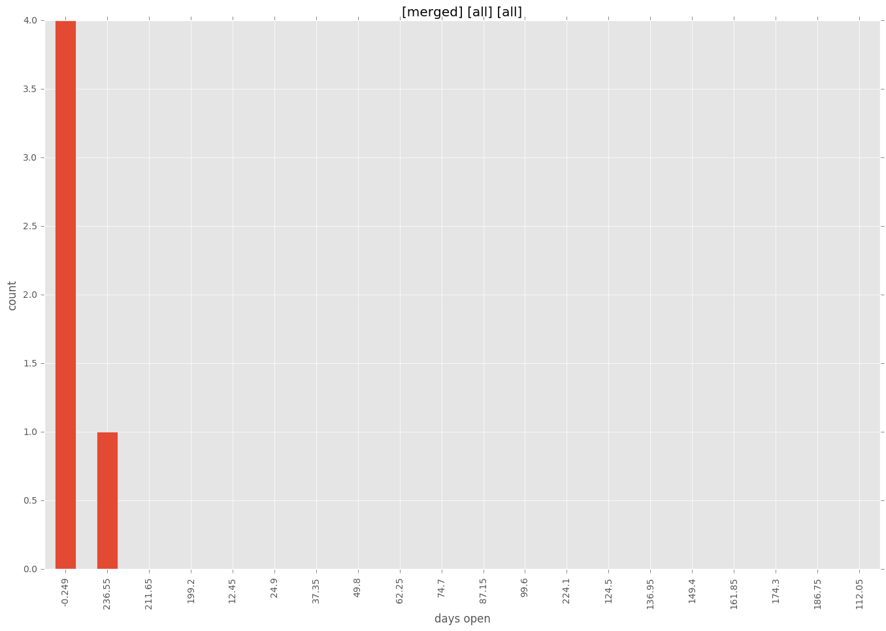
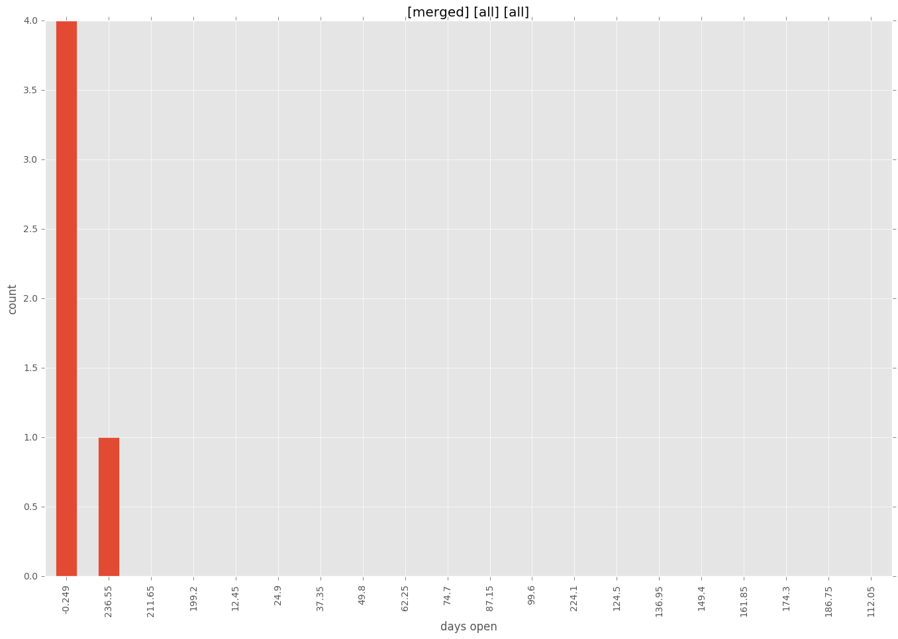

total issue counts
bugfix pull request: 2
feature pull request: 2
pullrequest: 6
docs pull request: 1
new plugin: 1
issue history
days open by issue type
feature pull request
count: 3
std: 66.3952809568
min: 134
max: 249
median: 249.0
mean: 210.666666667
all
count: 11
std: 102.038317224
min: 0
max: 249
median: 0.0
mean: 58.7272727273
pullrequest
count: 0
std: nan
min: nan
max: nan
median: nan
mean: nan
docs pull request
count: 2
std: 0.0
min: 0
max: 0
median: 0.0
mean: 0.0
bugfix pull request
count: 4
std: 4.04145188433
min: 0
max: 7
median: 3.5
mean: 3.5
new plugin
count: 2
std: 0.0
min: 0
max: 0
median: 0.0
mean: 0.0
closures grouped by total days open


 
